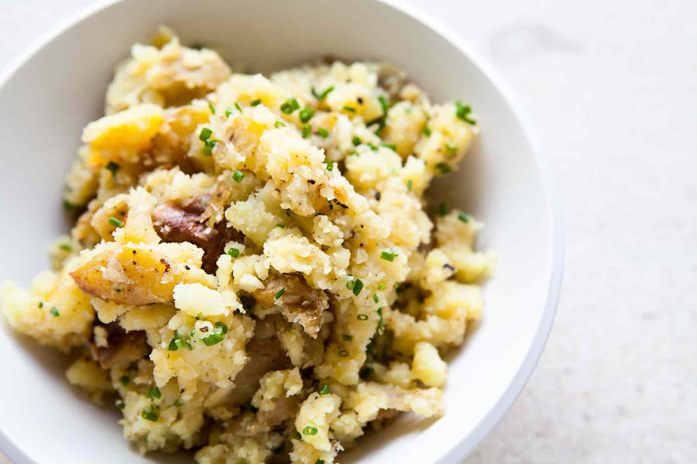

Home
Alu vorta

Description
Today we are going to cook my another recipe called Alu vorta. There is no Bengali who didnt liked it with Dal and rice. I learned it from my mom and lets dive in to the cooking algorithm of it.
- Put pan to the stove.
- Fry some chilli pepper
- Take a bowl and put that fried pepper with onion,salt and mustard oil
- Smash it untill it mixed up
- Now in this bowl put boiled Potato and smash again
- Ready to serve